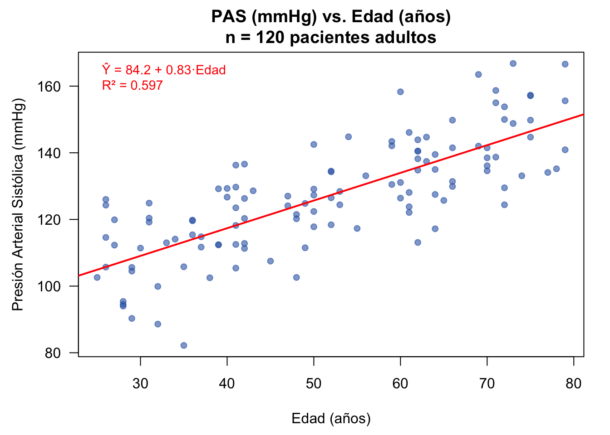
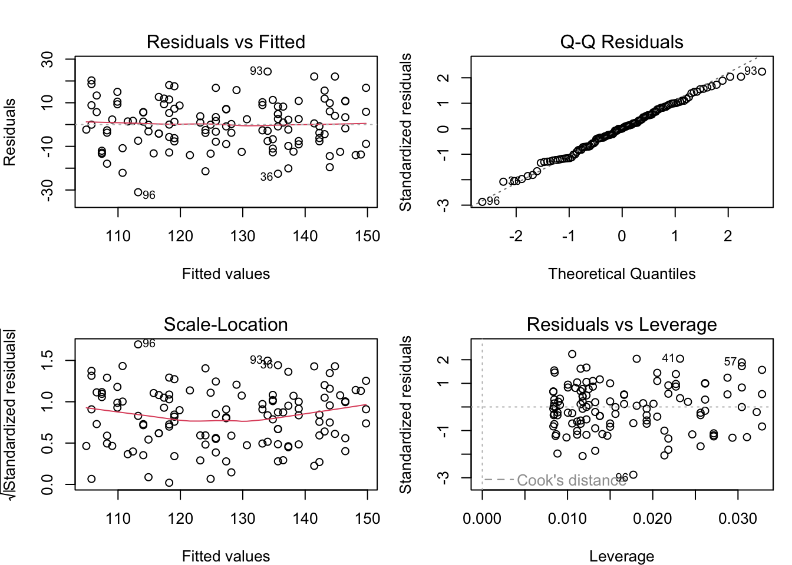
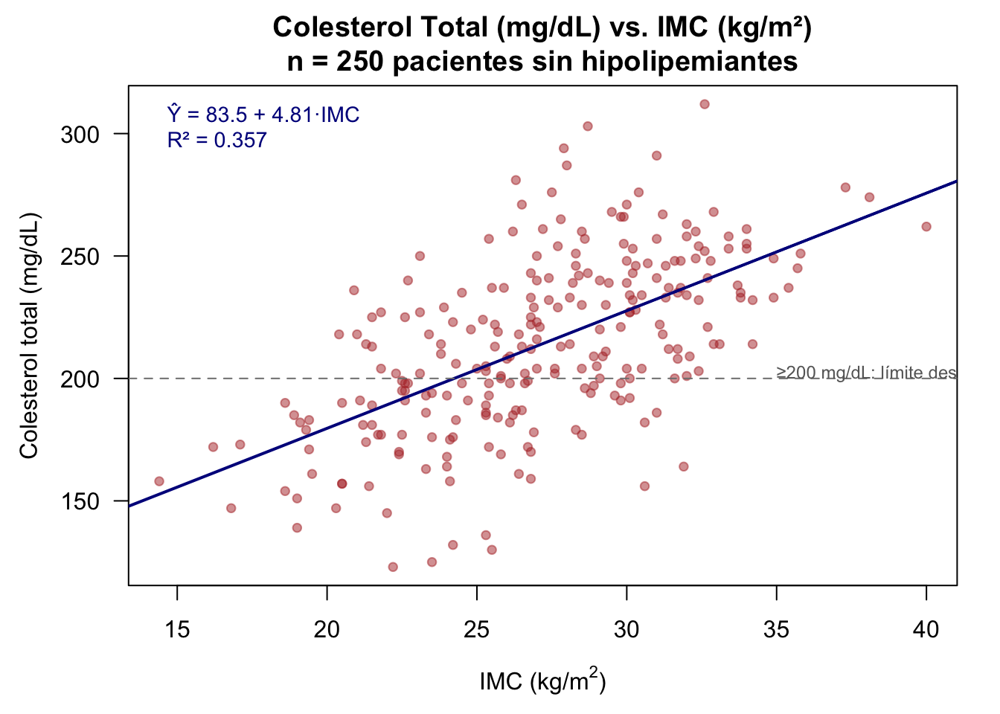

Mostrar el código
library(BioEstatR)
# ¿Los años de evolución de la diabetes predicen la HbA1c?
# Dataset: 94 pacientes diabéticos, Fac. Medicina UGR
rls(y = osteo$hba1c, x = osteo$tevol, grf = FALSE)El objetivo de la regresión es cuantificar la relación entre una variable respuesta y una o más variables explicativas. En ciencias de la salud, este enfoque permite responder preguntas como: ¿aumenta la presión arterial con la edad? ¿predice el índice de masa corporal el nivel de colesterol? ¿cuánto reduce la hemoglobina glicosilada cada año adicional de tratamiento?
Esta función describe el valor esperado (promedio) de \(Y\) dados los valores de las variables explicativas.
En esta semana nos enfocamos en el caso simple: una única variable explicativa \(X\).
Disponemos de \(n\) observaciones muestrales:
Para que la regresión lineal funcione correctamente, asumimos que se cumplen cinco supuestos:
Bajo estos supuestos, como \(Y_i = m(X_i) + U_i\):
Bajo los supuestos anteriores, especificamos una relación lineal entre \(Y\) y \(X\):
\[Y_i = \beta_0 + \beta_1 X_i + U_i, \quad i = 1, \ldots, n\]
donde:
La función de regresión poblacional es: \[E(Y|X = x) = \beta_0 + \beta_1 x\]
En un estudio transversal realizado en la consulta de medicina interna del Hospital Clínico San Cecilio de Granada, se recogieron datos de 120 adultos para estudiar la asociación entre la presión arterial sistólica (PAS) y la edad:
El modelo sería: \(\text{PAS}_i = \beta_0 + \beta_1 \times \text{Edad}_i + U_i\)
Si estimamos \(\beta_1 = 0.80\) mmHg/año, significa que por cada año adicional de edad, la PAS aumenta en promedio 0.80 mmHg. Si \(\beta_0 = 85.2\) mmHg, es el nivel basal estimado (extrapolación para edad = 0, sin interpretación directa).
Documentación completa en sec-bio-rls.
library(BioEstatR)
# ¿Los años de evolución de la diabetes predicen la HbA1c?
# Dataset: 94 pacientes diabéticos, Fac. Medicina UGR
rls(y = osteo$hba1c, x = osteo$tevol, grf = FALSE)Regresión lineal simple
----------------------------------------------------------------
n media dt Min Max
hba1c 94 8.565 1.799 4.60 13.80
tevol 94 12.330 8.534 0.00 35.00
# Correlación de Pearson:
r = -0.237 [IC 95%: (-0.420, -0.036)]
t = -2.341, gl = 92, p = 0.021
# Modelo: hba1c = 9.181 − 0.050 × tevol
R² = 0.056
estim se ic_inf ic_sup sig
(Cte) 9.181 0.320 8.546 9.816 <0.001
tevol -0.050 0.021 -0.092 -0.008 0.021
Error estándar residual: 1.757rls() integra correlación, coeficientes con IC, \(R^2\) y diagnóstico de residuos. La asociación es estadísticamente significativa pero débil (\(R^2 = 0.056\)): el tiempo de evolución solo explica el 5.6% de la variabilidad en HbA1c. Esto es clínicamente relevante: la diabetes de larga evolución tiende a un control glucémico algo peor, pero otros factores (adherencia al tratamiento, estilo de vida) son predominantes.
Los parámetros poblacionales \(\beta_0\) y \(\beta_1\) son desconocidos. Los estimamos usando una muestra mediante Mínimos Cuadrados Ordinarios (MCO), que minimiza la suma de residuos al cuadrado:
Los estimadores MCO minimizan:
\[Q(b_0, b_1) = \sum_{i=1}^n (y_i - b_0 - b_1 x_i)^2\]
Donde:
Así buscamos la línea que mejor ajusta los datos, minimizando las distancias verticales.
Para minimizar \(Q(b_0, b_1)\), igualamos a cero las derivadas parciales:
\[\frac{\partial Q}{\partial b_0} = -2 \sum_{i=1}^n (y_i - b_0 - b_1 x_i) = 0\]
\[\frac{\partial Q}{\partial b_1} = -2 \sum_{i=1}^n (y_i - b_0 - b_1 x_i) x_i = 0\]
Esto genera las ecuaciones normales:
\[n b_0 + b_1 \sum_{i=1}^n x_i = \sum_{i=1}^n y_i\]
\[b_0 \sum_{i=1}^n x_i + b_1 \sum_{i=1}^n x_i^2 = \sum_{i=1}^n x_i y_i\]
Resolviendo el sistema anterior obtenemos:
\[b_1 = \frac{\sum_{i=1}^n (x_i - \bar{x})(y_i - \bar{y})}{\sum_{i=1}^n (x_i - \bar{x})^2} = \frac{s_{xy}}{s_x^2}\]
\[b_0 = \bar{y} - b_1 \bar{x}\]
donde:
La línea de regresión estimada siempre pasa por el punto \((\bar{x}, \bar{y})\): cuando \(x_i = \bar{x}\), se cumple que \(\hat{y} = \bar{y}\).
Existe una relación útil entre el coeficiente de regresión y el coeficiente de correlación:
\[b_1 = r_{xy} \frac{s_y}{s_x}\]
donde \(r_{xy} = \frac{s_{xy}}{s_x s_y}\) es el coeficiente de correlación de Pearson.
Interpretación:
Ejemplo médico: Si en un estudio de hipertensión la correlación entre edad y PAS es \(r = 0.71\), con \(s_{\text{PAS}} = 14.5\) mmHg y \(s_{\text{edad}} = 15.9\) años, la pendiente de regresión es: \(b_1 = 0.71 \times (14.5/15.9) = 0.65\) mmHg/año.
La variabilidad en \(Y\) se descompone en dos partes:
\[\sum_{i=1}^n (y_i - \bar{y})^2 = \sum_{i=1}^n (y_i - \hat{y}_i)^2 + \sum_{i=1}^n (\hat{y}_i - \bar{y})^2\]
Relación: \(\text{SCT} = \text{SCE} + \text{SCR}\)
El coeficiente de determinación mide qué proporción de la variabilidad total en \(Y\) es explicada por el modelo:
\[R^2 = \frac{\text{SCE}}{\text{SCT}} = 1 - \frac{\text{SCR}}{\text{SCT}} = \frac{\sum_{i=1}^n (\hat{y}_i - \bar{y})^2}{\sum_{i=1}^n (y_i - \bar{y})^2}\]
Para regresión lineal simple:
\[R^2 = r_{xy}^2\]
donde \(r_{xy}\) es el coeficiente de correlación de Pearson.
Propiedades:
En el estudio de hipertensión (n = 120 pacientes), si la correlación entre edad y PAS es \(r_{xy} = 0.71\):
\[R^2 = 0.71^2 = 0.504\]
Interpretación clínica: El 50.4% de la variabilidad en la presión arterial sistólica entre estos pacientes es explicada por la edad. El 49.6% restante se debe a otros factores no recogidos en el modelo (tabaquismo, actividad física, tratamiento farmacológico, herencia genética, etc.).
Bajo los supuestos del modelo lineal, los estimadores \(b_0\) y \(b_1\) son variables aleatorias con distribuciones conocidas:
\[B_0 \sim N\left(\beta_0, \sigma_{B_0}^2\right)\]
\[B_1 \sim N\left(\beta_1, \sigma_{B_1}^2\right)\]
donde las varianzas son:
\[\sigma_{B_1}^2 = \frac{\sigma_u^2}{\sum_{i=1}^n (x_i - \bar{x})^2}\]
\[\sigma_{B_0}^2 = \sigma_u^2 \left[\frac{1}{n} + \frac{\bar{x}^2}{\sum_{i=1}^n (x_i - \bar{x})^2}\right]\]
y \(\sigma_u^2\) es la varianza poblacional del error.
Como \(\sigma_u^2\) es desconocida, la estimamos usando los residuos:
\[s_u^2 = \frac{\sum_{i=1}^n \hat{u}_i^2}{n - 2}\]
Entonces:
\[\hat{\sigma}_{B_1}^2 = \frac{s_u^2}{\sum_{i=1}^n (x_i - \bar{x})^2}\]
\[\hat{\sigma}_{B_0}^2 = s_u^2 \left[\frac{1}{n} + \frac{\bar{x}^2}{\sum_{i=1}^n (x_i - \bar{x})^2}\right]\]
En el contexto médico, nos interesa probar si existe asociación lineal entre \(Y\) y \(X\):
\[H_0: \beta_1 = 0 \quad \text{(la edad no predice la PAS)}\] \[H_1: \beta_1 \neq 0 \quad \text{(la edad sí predice la PAS)}\]
Bajo \(H_0\) y la normalidad de los errores:
\[T = \frac{B_1 - \beta_1}{\hat{\sigma}_{B_1}} \sim t_{n-2}\]
En particular, bajo \(H_0\):
\[T = \frac{b_1}{\widehat{\text{ee}}(b_1)} \sim t_{n-2}\]
donde \(\widehat{\text{ee}}(b_1) = \hat{\sigma}_{B_1}\) es el error estándar del estimador.
A nivel de significancia \(\alpha\):
Si \(n > 30\), usamos la aproximación normal: \(t_{1-\alpha/2, n-2} \approx z_{1-\alpha/2}\)
A modo de ilustración (valores hipotéticos para repasar la mecánica del contraste; la simulación R de la sección 9.12 producirá cifras distintas):
Conclusión clínica: Existe evidencia estadística muy fuerte de que la edad predice positivamente la presión arterial sistólica en esta muestra.
Con confianza \((1 - \alpha) \times 100\%\):
\[\left[b_1 - t_{1-\alpha/2, n-2} \cdot \widehat{\text{ee}}(b_1), \quad b_1 + t_{1-\alpha/2, n-2} \cdot \widehat{\text{ee}}(b_1)\right]\]
Con confianza \((1 - \alpha) \times 100\%\):
\[\left[b_0 - t_{1-\alpha/2, n-2} \cdot \widehat{\text{ee}}(b_0), \quad b_0 + t_{1-\alpha/2, n-2} \cdot \widehat{\text{ee}}(b_0)\right]\]
A menudo queremos construir un intervalo para la PAS promedio esperada en pacientes de una edad concreta \(x_0\):
\[\left[\hat{y}_{x_0} \pm t_{1-\alpha/2, n-2} \cdot s_u \sqrt{\frac{1}{n} + \frac{(x_0 - \bar{x})^2}{\sum_{i=1}^n (x_i - \bar{x})^2}}\right]\]
donde:
Reutilizando los mismos valores hipotéticos del apartado anterior — \(n = 120\), \(\hat{\beta}_1 = 0.80\) mmHg/año, \(\widehat{\text{ee}}(b_1) = 0.09\):
Con \(\alpha = 0.05\) (95% confianza), \(t_{0.975, 118} = 1.980\):
\[\text{IC}_{95\%}(\beta_1) = [0.80 - 1.980 \times 0.09, \, 0.80 + 1.980 \times 0.09] = [0.62, \, 0.98] \text{ mmHg/año}\]
Interpretación clínica: Con 95% de confianza, por cada año adicional de edad la PAS media aumenta entre 0.62 y 0.98 mmHg en esta población.
Los residuos son críticos para validar que los supuestos del modelo se cumplen.
Los residuos estimados son: \[\hat{u}_i = y_i - \hat{y}_i = y_i - b_0 - b_1 x_i\]
En contexto clínico: \(\hat{u}_i\) es la diferencia entre la PAS observada del paciente \(i\) y la que el modelo predice dado su edad. Un residuo grande positivo indica que el paciente tiene una PAS más elevada de lo esperado para su edad (posiblemente por otros factores de riesgo no incluidos).
Propiedades:
¿Qué buscar?
Patrón ideal: nube de puntos aleatoria alrededor del cero, sin forma clara
Patrón “embudo” (varianza aumenta con la PAS predicha):
Patrón curvo o no lineal:
Puntos muy alejados (outliers):
Este gráfico verifica la normalidad de los residuos:
Puntos en línea recta diagonal:
Puntos en las colas no siguen la línea:
Forma de S o zigzag:
Combina información de ambos: raíz cuadrada de residuos estandarizados vs. predichos. Detecta heteroscedasticidad.
Verifica la no autocorrelación. Si los pacientes fueron reclutados consecutivamente y hay patrón temporal en los residuos, puede indicar un sesgo de selección o un cambio en el protocolo de medida.
Un estudio transversal en la Unidad de Cardiología Preventiva del Hospital Universitario de Granada evalúa si el índice de masa corporal (IMC) predice el colesterol total sérico en pacientes sin tratamiento hipolipemiante:
| Estadístico | Valor |
|---|---|
| \(\bar{y}\) (colesterol) | 214.0 mg/dL |
| \(s_y\) | 36.0 mg/dL |
| \(\bar{x}\) (IMC) | 27.2 kg/m² |
| \(s_x\) | 4.5 kg/m² |
| \(s_{xy}\) | 101.25 (mg/dL)·(kg/m²) |
| \(r_{xy}\) | 0.625 |
\[b_1 = \frac{s_{xy}}{s_x^2} = \frac{101.25}{20.25} = 5.00 \text{ mg/dL por kg/m}^2\]
\[b_0 = \bar{y} - b_1 \bar{x} = 214.0 - 5.00 \times 27.2 = 214.0 - 136.0 = 78.0 \text{ mg/dL}\]
\[\widehat{\text{Colesterol}}_i = 78.0 + 5.00 \times \text{IMC}_i\]
Interpretación clínica:
\[R^2 = r_{xy}^2 = 0.625^2 = 0.391\]
Interpretación: El 39.1% de la variabilidad en el colesterol sérico se explica por el IMC. Es una asociación moderada, coherente con la literatura: el IMC es un factor de riesgo cardiovascular relevante pero no el único predictor del colesterol.
Con \(\widehat{\text{ee}}(b_1) = 0.41\) mg·dL⁻¹/(kg·m⁻²):
\[t = \frac{5.00}{0.41} = 12.2, \quad p < 0.001\]
Con \(n = 250\) (usando \(t_{0.975, 248} \approx 1.970\)):
Intervalo de confianza al 95%: \[[5.00 - 1.970 \times 0.41, \, 5.00 + 1.970 \times 0.41] = [4.19, \, 5.81] \text{ mg/dL por kg/m}^2\]
Conclusión: El IMC es un predictor estadísticamente significativo (\(p < 0.001\)) y clínicamente relevante del colesterol total. En términos de salud pública, reducir el IMC en 5 kg/m² (ej. pasar de obesidad a normopeso) se asocia en promedio con una reducción de 25 mg/dL en el colesterol total.
# Datos: PAS (mmHg) vs Edad (años) — 120 pacientes adultos
set.seed(2024)
n <- 120
edad <- round(runif(n, 25, 80))
pas <- round(85.2 + 0.80 * edad + rnorm(n, 0, 10.5), 1)
datos <- data.frame(edad = edad, pas = pas)
# Estadísticas descriptivas
cat("=== Estadísticas descriptivas ===\n")=== Estadísticas descriptivas ===cat("Edad — media:", round(mean(edad), 1), "años | DT:", round(sd(edad), 1), "\n")Edad — media: 51.8 años | DT: 15.9 cat("PAS — media:", round(mean(pas), 1), "mmHg | DT:", round(sd(pas), 1), "\n")PAS — media: 127 mmHg | DT: 17.1 cat("Correlación de Pearson:", round(cor(edad, pas), 3), "\n\n")Correlación de Pearson: 0.773 # Ajustar modelo de regresión lineal simple
modelo <- lm(pas ~ edad, data = datos)
# Tabla de coeficientes con broom
cat("=== Modelo de Regresión ===\n")=== Modelo de Regresión ===knitr::kable(tidy(modelo), digits = 3, caption = "Coeficientes del modelo lineal")| term | estimate | std.error | statistic | p.value |
|---|---|---|---|---|
| (Intercept) | 84.15 | 3.402 | 24.7 | 0 |
| edad | 0.83 | 0.063 | 13.2 | 0 |
# Bondad de ajuste
glance_modelo <- glance(modelo)
cat("\nR² =", round(glance_modelo$r.squared, 3),
"| R² ajustado =", round(glance_modelo$adj.r.squared, 3),
"| F-estadístico =", round(glance_modelo$statistic, 2),
"(p < 0.001)\n")
R² = 0.597 | R² ajustado = 0.594 | F-estadístico = 175 (p < 0.001)Interpretación estadística: El modelo de regresión lineal simple estimó un incremento de la presión arterial sistólica de aproximadamente 0.83 mmHg por cada año adicional de edad (b₁ = 0.83, EE = 0.063, t(118) = 13.2, p < 0.001, IC 95%: [0.71, 0.96]). El coeficiente de determinación R² = 0.597 indica que la edad explica el 59.7% de la variabilidad observada en la PAS, lo que refleja una relación lineal fuerte y estadísticamente significativa. Este hallazgo es clínicamente relevante: un aumento de edad de 20 años se asociaría con un incremento esperado de ~17 mmHg en la PAS.


# Predicción de PAS media para tres perfiles de edad
edades_nuevas <- data.frame(edad = c(40, 55, 70))
ic_media <- predict(modelo, newdata = edades_nuevas,
interval = "confidence", level = 0.95)
ic_individ <- predict(modelo, newdata = edades_nuevas,
interval = "prediction", level = 0.95)
resultados <- data.frame(
Edad_años = edades_nuevas$edad,
PAS_predicha = round(ic_media[, "fit"], 1),
IC95_inf = round(ic_media[, "lwr"], 1),
IC95_sup = round(ic_media[, "upr"], 1),
IP95_inf = round(ic_individ[, "lwr"], 1),
IP95_sup = round(ic_individ[, "upr"], 1)
)
cat("=== Predicciones con IC 95% (media) e IP 95% (individuo nuevo) ===\n\n")=== Predicciones con IC 95% (media) e IP 95% (individuo nuevo) ===print(resultados, row.names = FALSE) Edad_años PAS_predicha IC95_inf IC95_sup IP95_inf IP95_sup
40 117 115 120 95.6 139
55 130 128 132 108.1 152
70 142 139 145 120.5 164cat("\nNota: IC = intervalo de confianza para la PAS media poblacional.\n")
Nota: IC = intervalo de confianza para la PAS media poblacional.cat(" IP = intervalo de predicción para un paciente individual nuevo.\n") IP = intervalo de predicción para un paciente individual nuevo.cat(" El IP siempre es más amplio que el IC.\n") El IP siempre es más amplio que el IC.summary(lm())cat("=== Coeficientes estimados ===\n")=== Coeficientes estimados ===coef(modelo)(Intercept) edad
84.15 0.83 cat("\n=== Errores estándar de los coeficientes ===\n")
=== Errores estándar de los coeficientes ===round(summary(modelo)$coefficients[, "Std. Error"], 4)(Intercept) edad
3.4023 0.0628 cat("\n=== Estadísticos t y valores p ===\n")
=== Estadísticos t y valores p ===round(summary(modelo)$coefficients[, c("t value", "Pr(>|t|)")], 4) t value Pr(>|t|)
(Intercept) 24.7 0
edad 13.2 0cat("\n=== Bondad de ajuste ===\n")
=== Bondad de ajuste ===cat("R² =", round(summary(modelo)$r.squared, 4), "\n")R² = 0.597 cat("R² ajustado =", round(summary(modelo)$adj.r.squared, 4), "\n")R² ajustado = 0.594 cat("Error estándar residual (su) =",
round(summary(modelo)$sigma, 3), "mmHg\n")Error estándar residual (su) = 10.9 mmHgcat("\n=== Intervalos de confianza al 95% para los coeficientes ===\n")
=== Intervalos de confianza al 95% para los coeficientes ===round(confint(modelo, level = 0.95), 4) 2.5 % 97.5 %
(Intercept) 77.416 90.891
edad 0.706 0.955set.seed(2025)
n2 <- 250
imc <- round(rnorm(n2, 27.2, 4.5), 1)
colest <- round(78.0 + 5.0 * imc + rnorm(n2, 0, 28.7), 0)
datos_c <- data.frame(imc = imc, colesterol = colest)
modelo_c <- lm(colesterol ~ imc, data = datos_c)
# Tabla de coeficientes con broom
cat("=== Modelo de Regresión ===\n")=== Modelo de Regresión ===knitr::kable(tidy(modelo_c), digits = 3, caption = "Coeficientes del modelo lineal")| term | estimate | std.error | statistic | p.value |
|---|---|---|---|---|
| (Intercept) | 83.53 | 11.27 | 7.41 | 0 |
| imc | 4.81 | 0.41 | 11.72 | 0 |
Regresión lineal Colesterol Total ~ IMC. Los 250 puntos representan pacientes sin tratamiento hipolipemiante. La línea muestra la relación estimada: por cada kg/m² adicional de IMC, el colesterol aumenta en promedio ~5 mg/dL.
# Bondad de ajuste
glance_c <- glance(modelo_c)
cat("\nR² =", round(glance_c$r.squared, 3),
"| R² ajustado =", round(glance_c$adj.r.squared, 3),
"| F-estadístico =", round(glance_c$statistic, 2),
"(p < 0.001)\n\n")
R² = 0.357 | R² ajustado = 0.354 | F-estadístico = 137 (p < 0.001)par(mar = c(4.5, 4.5, 3, 1.5))
plot(datos_c$imc, datos_c$colesterol,
main = "Colesterol Total (mg/dL) vs. IMC (kg/m²)\nn = 250 pacientes sin hipolipemiantes",
xlab = expression("IMC (kg/m"^2*")"),
ylab = "Colesterol total (mg/dL)",
pch = 19, col = rgb(0.7, 0.2, 0.2, 0.5), cex = 0.8, las = 1)
abline(modelo_c, col = "darkblue", lwd = 2)
abline(h = 200, lty = 2, col = "gray50") # Umbral deseable
text(35, 202, "≥200 mg/dL: límite deseable", col = "gray40", cex = 0.75, adj = 0)
legend("topleft",
legend = paste0("Ŷ = ", round(coef(modelo_c)[1], 1),
" + ", round(coef(modelo_c)[2], 2), "·IMC\n",
"R² = ", round(summary(modelo_c)$r.squared, 3)),
bty = "n", text.col = "darkblue", cex = 0.9)
Interpretación estadística: En una muestra de 250 pacientes sin hipolipemiantes, el modelo de regresión lineal mostró que por cada unidad adicional de IMC (kg/m²), el colesterol total aumenta en promedio 4.81 mg/dL (b₁ = 4.81, EE = 0.41, t(248) = 11.72, p < 0.001). El R² = 0.357 indica que el IMC explica el 35.7% de la variación en colesterol, estableciendo una relación lineal moderada y estadísticamente significativa. Desde una perspectiva clínica de prevención cardiovascular, una reducción de 5 unidades en el IMC (ej. pasar de obesidad a sobrepeso) se asociaría con una reducción esperada de ~24 mg/dL en el colesterol total, lo que podría reducir el riesgo cardiovascular.
Modelo:
\[Y_i = \beta_0 + \beta_1 X_i + U_i\]
Estimadores MCO:
\[b_1 = \frac{s_{xy}}{s_x^2}, \quad b_0 = \bar{y} - b_1 \bar{x}\]
Descomposición de varianza:
\[\text{SCT} = \text{SCE} + \text{SCR}\]
Coeficiente de determinación:
\[R^2 = 1 - \frac{\text{SCR}}{\text{SCT}} = r_{xy}^2\]
Varianza del error estimada:
\[s_u^2 = \frac{\sum_{i=1}^n \hat{u}_i^2}{n - 2}\]
Errores estándar:
\[\widehat{\text{ee}}(b_1) = \frac{s_u}{\sqrt{\sum (x_i - \bar{x})^2}}, \quad \widehat{\text{ee}}(b_0) = s_u\sqrt{\frac{1}{n} + \frac{\bar{x}^2}{\sum(x_i - \bar{x})^2}}\]
Test t:
\[t = \frac{b_j}{\widehat{\text{ee}}(b_j)} \sim t_{n-2}\]
Intervalo de confianza para \(\beta_j\):
\[[b_j \pm t_{1-\alpha/2, n-2} \cdot \widehat{\text{ee}}(b_j)]\]
Ejercicio 1: En un estudio sobre prediabetes en 40 pacientes del centro de salud, se investiga la relación entre el índice de masa corporal (\(X\), kg/m²) y la glucosa en ayunas (\(Y\), mg/dL). Se obtienen las siguientes estadísticas:
Ejercicio 2: Un estudio de función pulmonar en una consulta de neumología evalúa el efecto del tabaquismo sobre el FEV1 (volumen espiratorio forzado en el primer segundo, expresado como % del predicho). Con 60 pacientes fumadores se obtiene:
Ejercicio 3: Para los datos del estudio de colesterol e IMC (sección 9.12, \(n = 250\)):
Ejercicio 4: En un ensayo clínico con 30 pacientes febriles, se estudia la relación entre la dosis de paracetamol (\(X\), mg/kg) y la reducción de temperatura corporal a las 2 horas (\(Y\), °C). El modelo estimado es:
\[\hat{y}_i = 0.50 + 0.30 x_i, \quad R^2 = 0.64\]
Ejercicio 5: Un clínico interpreta los gráficos de diagnóstico de un modelo que relaciona la supervivencia (meses) con el tamaño tumoral (mm). Describe qué patrón en cada gráfico indicaría:
Ejercicio 6: En un programa de cribado de cáncer de próstata, se estudia la asociación entre el PSA sérico (ng/mL) y la edad (años). En una primera muestra: \(r = 0.58\). En una segunda muestra: \(r = 0.45\):
Ejercicio 1: - a) \(b_1 = s_{xy}/s_x^2 = 27.0/9.0 = 3.0\) mg/dL por kg/m²; \(b_0 = 105.5 - 3.0 \times 28.5 = 20.0\) mg/dL - b) Por cada kg/m² adicional de IMC, la glucosa en ayunas aumenta en promedio 3 mg/dL, manteniendo el resto constante. Con un IMC de 30 vs 25, se esperan 15 mg/dL más de glucosa. - c) \(r = s_{xy}/(s_x \cdot s_y) = 27.0/(3.0 \times 12.0) = 0.75\); \(R^2 = 0.5625\). El IMC explica el 56.25% de la variabilidad en la glucosa en ayunas. - d) \(\hat{Y}(32) = 20.0 + 3.0 \times 32 = 116\) mg/dL. Sí, está en rango de prediabetes (≥100 mg/dL); de hecho, supera el umbral de diabetes (≥126 mg/dL), lo que indica riesgo elevado.
Ejercicio 2: - a) \(t = -0.80/0.12 = -6.67\); \(gl = 58\); \(t_{0.975, 58} \approx 2.00\). Como \(|{-6.67}| > 2.00\) (\(p < 0.001\)), rechazamos \(H_0\). El tabaquismo tiene un efecto estadísticamente significativo sobre el FEV1. - b) IC 95%: \([-0.80 \pm 2.00 \times 0.12] = [-1.04, -0.56]\) % por paquete-año. - c) Existe evidencia de que el tabaquismo reduce el FEV1. Cada paquete-año adicional se asocia con una reducción media de 0.80% del FEV1 predicho. - d) Sí, es razonable. El tabaquismo provoca inflamación crónica y destrucción del parénquima pulmonar, reduciendo la función respiratoria. El signo negativo es clínicamente correcto.
Ejercicio 3: - a) Usando \(\hat{Y}(30) = 78.0 + 5.0 \times 30 = 228\) mg/dL. Con \(s_u \approx 28.7\) mg/dL, el IC al 95% requiere calcular \(s_u\sqrt{1/n + (30 - 27.2)^2/\text{SCT}_x}\) — los datos dan un intervalo aproximado de \([221, 235]\) mg/dL. - b) Sí, \(t = 12.2 \gg t_{0.975, 248} \approx 1.970\) (\(p < 0.001\)). El efecto del IMC sobre el colesterol es altamente significativo. - c) Residuo: \(\hat{u} = 260 - (78.0 + 5.0 \times 32) = 260 - 238 = 22\) mg/dL. Un residuo de +22 mg/dL es moderado (< 2 desviaciones estándar). Es compatible con dislipemia familiar leve, aunque no constituye un outlier extremo.
Ejercicio 4: - a) \(R^2 = 0.64\); el 64% de la variabilidad en la reducción de temperatura es explicado por la dosis de paracetamol. - b) \(\hat{Y}(\bar{x}) = 0.50 + 0.30 \times 10 = 3.5\) °C de reducción media. - c) Por cada mg/kg adicional de paracetamol, la temperatura desciende en promedio 0.30 °C. - d) El 36% restante: estado inmune del paciente, edad, causa de la fiebre (viral vs. bacteriana), hidratación, medicación concomitante, hora de administración.
Ejercicio 5: - a) Patrón curvado (en forma de U o de arco) en el gráfico de residuos vs. valores ajustados. - b) Patrón “embudo” (varianza de residuos aumenta con los valores predichos). Sugiere log-transformación de la variable respuesta. - c) Desviaciones sistemáticas de la línea 45° en el Q-Q plot (especialmente en las colas). - d) Punto con leverage elevado y residuo grande en el gráfico de Residuos vs. Leverage (esquina superior o inferior derecha). Requiere investigación clínica del caso.
Ejercicio 6: - a) \(R^2_1 = 0.58^2 = 0.336\) (33.6%); \(R^2_2 = 0.45^2 = 0.2025\) (20.25%). La primera muestra tiene mayor capacidad predictiva del PSA a partir de la edad. - b) La relación PSA-edad es más débil en la segunda muestra (\(r\) disminuye de 0.58 a 0.45). - c) \(b_1 = r \cdot s_y/s_x\). Si las desviaciones estándar no cambian, \(b_1\) disminuye proporcionalmente: \(b_{1,2}/b_{1,1} = 0.45/0.58 = 0.776\) (un 22.4% menor). - d) Posibles razones: rango de edades más estrecho en la segunda muestra, mayor proporción de pacientes con prostatitis o hipertrofia benigna de próstata (que elevan el PSA independientemente de la edad), diferencias en la técnica de laboratorio.
Para ampliar los contenidos de este capítulo con técnicas estadísticas avanzadas, visita: